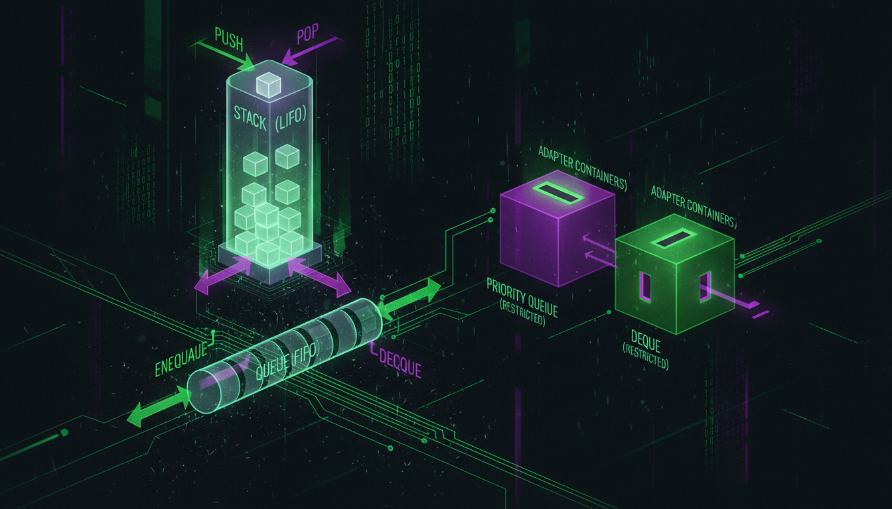

std::stack, std::queue, std::priority_queue, адаптери

Stack (стек) — структура даних LIFO (Last In, First Out).
#include <iostream>
#include <stack>
int main() {
std::stack<int> st;
st.push(10);
st.push(20);
st.push(30);
std::cout << "Верх: " << st.top() << std::endl; // 30
st.pop(); // Видалити 30
std::cout << "Верх: " << st.top() << std::endl; // 20
std::cout << "Розмір: " << st.size() << std::endl;
return 0;
}Queue (черга) — структура даних FIFO (First In, First Out).
#include <iostream>
#include <queue>
int main() {
std::queue<std::string> q;
q.push("Перший");
q.push("Другий");
q.push("Третій");
std::cout << "Перший: " << q.front() << std::endl; // Перший
std::cout << "Останній: " << q.back() << std::endl; // Третій
q.pop(); // Видалити Перший
std::cout << "Тепер перший: " << q.front() << std::endl;
return 0;
}